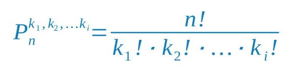

Permutação é um conceito matemático que envolve a organização de elementos em um
conjunto de
maneiras específicas. Imagine que você tem um conjunto de objetos, como letras ou números, e
deseja
rearranjá-los em diferentes ordens. Essas diferentes ordens são chamadas de permutações.
Por exemplo, considere as letras "A", "B" e "C". As permutações dessas letras seriam
"ABC",
"ACB",
"BAC", "BCA", "CAB" e "CBA". Cada uma dessas combinações representa uma permutação única.
O número total de permutações possíveis para um conjunto de n elementos pode ser calculado usando a fórmula n!, onde n! representa o produto de todos os números inteiros de 1 até n.
Caso queira utilizar a calculadora, clique aqui!
As permutações são úteis em uma variedade de situações. Elas são
amplamente
utilizadas
em combinatória, probabilidade, estatística e ciência da computação. Por exemplo, ao calcular as
possíveis combinações de uma senha, ao embaralhar cartas em um jogo de cartas, ou ao analisar as
diferentes maneiras de organizar elementos em um conjunto, as permutações desempenham um papel
fundamental.
Além disso, as permutações podem ser restritas por certas condições. Por
exemplo, em
casos onde há elementos repetidos, utiliza-se a fórmula de permutação com repetição. E em
situações
onde apenas um subconjunto dos elementos é considerado, calcula-se permutações parciais.
Uma permutação simples envolve a organização de elementos distintos em um
conjunto, sem
repetição. Isso significa que cada elemento é único e aparece apenas uma vez em cada
arranjo.
Por
exemplo, se tivermos um conjunto de três letras, como "A", "B" e "C", as permutações simples seriam
arranjos como "ABC", "ACB", "BAC", "BCA", "CAB" e "CBA". Cada uma dessas combinações representa uma
permutação única.
O número total de permutações possíveis para um conjunto de
n elementos pode ser calculado usando a fórmula
n!, onde n! representa o produto de todos os números inteiros de 1 até
n. Por exemplo, para um conjunto de 3 elementos como as letras "A", "B" e "C", o número total de
permutações seria:
Caso queira utilizar a calculadora, clique aqui!
Uma permutação com repetição ocorre quando há elementos repetidos no conjunto que está sendo permutado. Isso significa que alguns elementos são idênticos e, portanto, podem ser trocados sem alterar o resultado geral. Por exemplo, se tivermos o conjunto {A, A, B}, as permutações com repetição incluiriam arranjos como "AAB", "ABA" e "BAA".
Para calcular o número total de permutações com repetição, utilizamos uma fórmula modificada. Suponha que temos um conjunto de n elementos, onde n1, n2, ..., nk representam o número de repetições de cada elemento. A fórmula é dada por:
Essa fórmula ajusta o número total de permutações pela presença de elementos repetidos, garantindo que não contemos permutações idênticas mais de uma vez.
Caso queira utilizar a calculadora, clique: aqui!